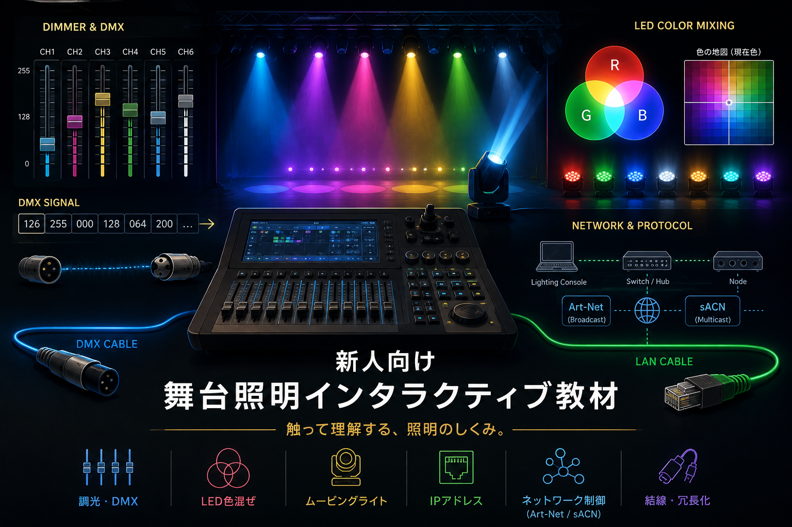

新人向け
舞台照明インタラクティブ教材
触って理解する、照明のしくみ。
舞台照明では、フェーダーを上げるだけでも、内部では数値・信号・灯体・ネットワークがつながって動いています。 この教材では、難しい用語を先に覚えるのではなく、画面を触りながら「何が起きているのか」を見ていきます。 8-bit、16-bit、DMX、LED色混ぜ、ムービングライト、IPアドレス、Art-Net、sACNなどを、現場で迷わないための入口として整理しています。
学習ルート
STEP 1
調光とDMX
フェーダーの動きが、数値になり、DMX信号として送られる流れをつかむ。
STEP 2
LEDと灯体制御
色を作る考え方と、複数パラメータを持つ灯体の動きを見る。
STEP 3
ネットワーク制御
照明信号をLANで送るために必要な、IP、Broadcast、Multicast、結線を整理する。